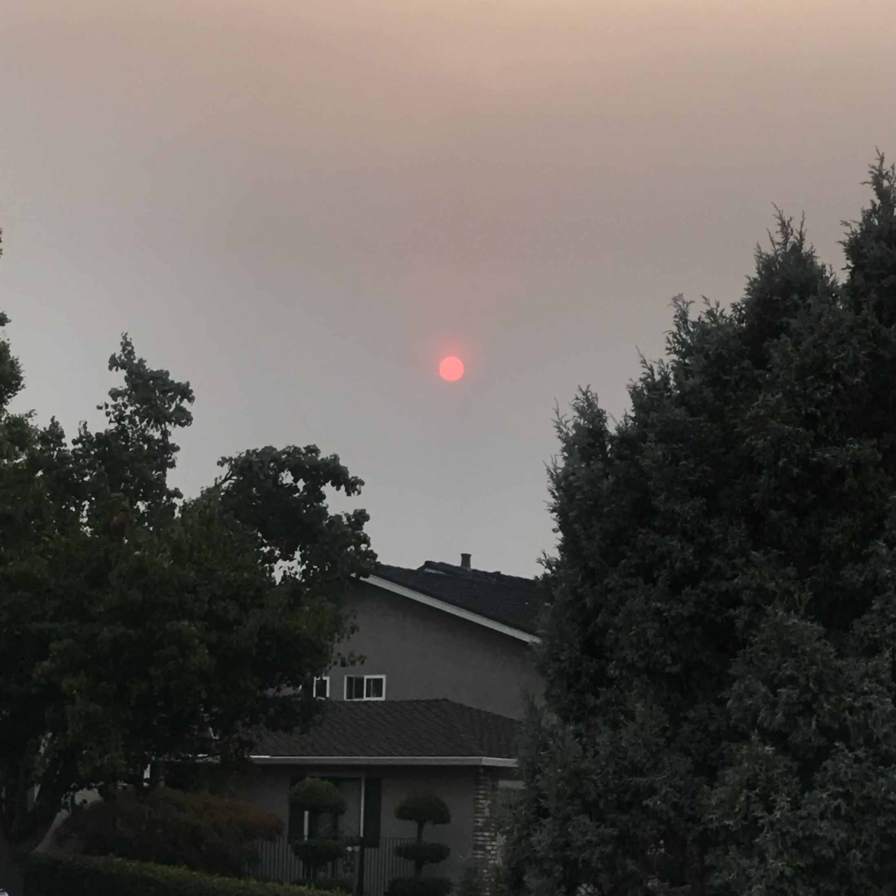

Shirley’s image is a photo of her bullet journal spread! The sense of unity created through the color blue in this image
is very interesting, such as the blue marking from the blue highlighter and the pen with the blue details placed above,
as it ties together the entire composition. Also, how certain details on this spread imitates a browser or webpage, such
as the popup windows on the right side, is very fun and clever. An obvious aspect of this image is the end goal
of aesthetics, more specifically, creating an aesthetically pleasing layout to share with others since the photo includes
her watermark, and ultimately, this image also displays one of Shirley’s hobbies, which is bullet journaling!
Visual Thinking Analysis - Part One

Emily Gui 2020.
This is a photo of the sunset during the wildfires last winter, with the glaring red sun peeking through the smoky horizon.
I find this image very interesting because I had never seen the sun in such a bright red shade before, and watching it sink
through the gray sky, along with how quiet my neighborhood was due to the pandemic, created an apocalyptic atmosphere. Also,
I want to keep and mention that all photos included are raw, untouched and unedited, which adds to the eerie surrealism of
the photo — my archive will focus around photos of the sky, specifically sunsets and sunrises, and include squares of color
extracted from certain areas of each photo, allow users to hover over each square and use these color palettes as inspiration.
That being said, this collection says something about how I find inspiration through nature. I often myself stuck between art
blocks, wasting hours upon hours of my day not knowing where or how to start, and to clear my head, I always go outside for a
walk. These daily strolls give me an opportunity to look up and stretch my limbs after hours of crouching over my laptop in
frustration, and in these moments, I truly get to appreciate the sky. Though I am not the best with photography, my camera
roll is filled with images of the sky as I find myself automatically reaching for my phone to capture these fleeting images
every time I go out. So, in a sense, this archive is a reminder to myself that if I ever find myself in a situation where I
feel as though I have nowhere to go, I can always look up.
Integrating Image Interactions to Another Level in Web Design
Our eyes are constantly taking in information from our surroundings everyday, and in fact, our eyes do such a good job
that we usually can set ourselves to auto-pilot and absorb images without much thought at all. Sometimes, however, there
are visuals that “demand patience and focus”, as mentioned in the article “10 Intriguing Photographs to Teach Close
Reading and Visual Thinking Skills”, and instead of doing a routine glance, we should stop and appreciate the image presented
in front of us.
With this thought in mind, I decided to search and analyze for a website that uses interesting images and interactions that caught my eye,
leading me to J Dillas Donuts. The home page of this website is lined with fifteen three-dimensional
donuts, and the simple black and warm yellow color palette creates a futuristic theme with an underlying tone of eerie surrealism. Once you
hover over a donut, the donut tilts forward and three mini screens of a music video begin to circle the donut as the music plays in the background.
You can also click on a donut to listen to a specific song, bringing the donut into the center of the page, transforming it into a vinyl record,
and listing the song’s name directly underneath the record. These mouse interactions with the donuts from the homepage and a specific donut are seamless
with no breaks or loading pages in between, allowing the user to view each image with ease — it feels complex without it being overwhelming, and the somewhat
minimal interface draws more attention to the music videos floating around the arounds, highlighting the main point of the website that is to commemorate the
legacy of this artist.
I am still being a beginner when it comes to JavaScript, and this website made me realize how far one can truly take a website’s image
interactions. Seeing these almost out-of-world implementations has also inspired me to think outside of the box when it comes to web design and development.
The Not-so Dreaded Popup Window: Practices for Improving Overlays
Overlays and lightboxes were first deemed as the “elegant solution to a tricky interaction-design challenge” of
displaying important information without affecting the main screen’s content, as stated in the article “Overuse of Overlays: How to Avoid Misusing Lightboxes”.
However, the constant misuse of this UI pattern has trained users’ initial response to “instinctively and automatically
dismiss these windows” as stated by the article
“Best Practices for Modals/Overlays/Dialog Windows”.
Though the opportunity to add an overlay may arise, whether or not it is necessary to include is an important factor
to consider — for instance, what action does the user need to perform (i.e. “view content, complete a form, make a decision”,
etc.)? If so, from what I have gathered, one should aim to create a display-responsive overlay with a lightbox effect that is user-initiated,
clearly states its purpose, and has a visible escape route. The size and location of the window must be able adjust between mobile and desktop
screen sizes in order to keep the page’s content well-orientated without blocking access towards any other content, and giving the user access
and control over the window allows for a better overall experience.
As someone who is always online, whether it be attending classes over zoom or browsing the web in my free time, I agree and feel as though
popup windows have developed a negative connotation, as they are sometimes styled as untimely interruptions rather than important reminders.
Now, from the developer’s perspective, these articles helped me better understand why we feel this way towards this feature, what exactly makes
a popup window inefficient, and what practices I consider and in mind as I develop my own studio projects.
Boosting Usability in Form Design
The article “Best practices for form design”
opened my eyes on how one can create an efficient and accessible online form and demonstrated how implementing or changing
the smallest details can make a noticeable difference.
Aiming for a streamlined minimized interface by “minimizing the input fields” and using a “one column layout”
proves to boost the usability of a form, but something else that I discovered while reading these tips is how
less is not always more. For instance, inline labels and dropdown menus can save space on a webpage, but these
features may hide away essential information and can potentially result in more taps/clicks from the user, so
they are not always recommended. Also, as someone constantly struggles with choosing names or setting labels,
learning about the “action buttons” was very helpful for me. This concept states that the label of a button
should complete the statement “I want to”, such as “Book Ticket” and “Create Account”, and using this active
voice on interactive buttons can make the entire user experience much more effective.
Though I have filled out many online forms, I never realized how important certain features were in contributing
to its overall usability, and moving forward, I will definitely take this article’s tips into consideration when
integrating online forms and creating user interfaces in the future.